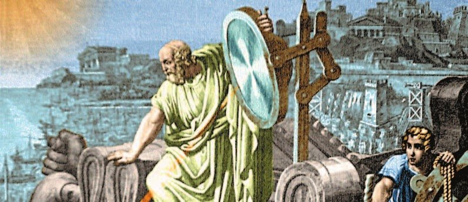
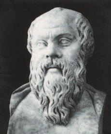
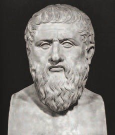
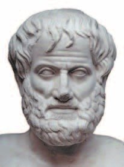
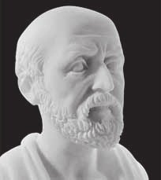

«Человек есть мера всех вещей»
Греков интересовало всё на свете. Самый великий их учёный — (на картинке выше). Когда враги осадили его город, он собрал солнечный свет зеркалами в одну точку — и корабли загорелись.
Больше всего греки любили . Философы спорили: из чего состоят все вещи? Одни говорили — из огня, другие — из воды. А потом решили: каждый предмет состоит из мельчайших частичек — атомов.
Философов интересовал и сам человек: как ему стать лучше? На храме Аполлона в Дельфах было высечено: «Познай самого себя». Это стало девизом философа . Он жил в середине V века до н. э., беседовал с людьми на улицах и на агоре о правде, добре и зле. Сам он ничего не записывал.
А его ученик записывал очень много — в виде диалогов, то есть разговоров.
Ученик Платона — . Он знал о мире так много, что его мысли о космосе, природе и человеке служили людям ещё тысячу лет. Он придумал, как правильно доказывать свою правоту, — так появилась наука .
Ты любишь спорить — и хочешь, чтобы тебе приводили доводы, а не «потому что». Вот это и есть логика: правоту надо доказать.
У Платона в Афинах была школа — Академия, у Аристотеля — Ликей. Отсюда наши слова «академия» и «лицей». А «гимназия» — от гимнасия из §31. Эти слова ты слышала — теперь знаешь, что они греческие.
В Древней Греции всеобщий интерес вызывали различные области знаний. Особенно заметным это было в философии. Пытаясь понять, что лежит в основе всех вещей в мире (одни считали, что огонь, другие — что вода), философы пришли к выводу, что каждый предмет состоит из мельчайших частичек — атомов.
Философов интересовала не только природа. Они пытались найти основу для гармоничного развития человека. «Познай самого себя» — такая надпись была высечена на фронтоне храма Аполлона в Дельфах. Она стала девизом для философа Сократа, жившего в середине V (5) века до н. э.
Один из учеников Сократа, философ Платон, в отличие от своего учителя, оставил громадное количество записей в форме диалогов.
«Все люди от природы стремятся к знаниям» — это первая фраза труда под названием «Метафизика» ученика Платона — Аристотеля. Разрабатывая доказательства своей правоты, Аристотель заложил основы новой науки, которая получила название логика.
Аристотель поражал современников обширностью и глубиной своих знаний о мире. Многие мысли Аристотеля о космосе, природе и о человеке долгое время оставались основой для большинства знаний о мире и через тысячу лет после его смерти. Он попытался создать проект идеального устройства полиса и государства.
Свои беседы Аристотель проводил в гимнасии рядом с храмом Аполлона Ликейского. Учебное заведение унаследовало это имя. Платона считают основателем Академии, а Аристотеля — Ликея (от его названия происходит современное «лицей»). Эти две школы философов были наиболее известными в Афинах учебными заведениями.



- Как ты думаешь, почему в Древней Греции возникла новая наука философия?
1. Чем объяснение философов «всё состоит из атомов» отличается от мифов (§21)?
2. Сократ сам ничего не записывал. Как же его идеи дошли до нас? Найди ответ в подписи к бюсту и в абзаце о Платоне.
3. Аристотель писал: условие свободы — «по очереди быть управляемым и править». Что из §29 подходит под эти слова?
«Отец истории»
Греция — родина науки истории. Раньше о прошлом узнавали в основном из мифов.
первым попробовал рассказать, как всё было на самом деле. Поэтому ещё в древности его назвали «отцом истории».
Он расспрашивал участников событий и сам ездил туда, где шли бои. Свою «Историю» он посвятил войне греков с персами (§28) и старался точно передать то, что ему рассказали.
Ещё Геродот описал Египет, Малую Азию, Финикию, Вавилон и Северное Причерноморье. Для истории нашей страны особенно важен его рассказ о греческих колониях на Чёрном море и о скифах (§24—25).
Следующий историк — . Он написал «Историю» в восьми книгах. Он брал только самые достоверные известия и объяснял события без вмешательства богов. Этим он отличался от Геродота. Кстати, речь Перикла из §29 записал как раз Фукидид.
Греция считается родиной науки истории, поскольку до этого знания о прошлом черпали в основном из мифов. Геродот первым попытался изложить исторические события. Он заложил основы исторического исследования, поэтому уже в древности его назвали «отцом истории».
Геродот собирал свидетельства прошлого, основываясь на воспоминаниях участников событий. Он посетил многие места, связанные с военными действиями. Свою «Историю», посвящённую войне греков с персами, Геродот создавал, опираясь на устную традицию, он стремился точно передать то, что ему сообщали. Автор представил обширную картину областей, известных ему в то время: Египта, Малой Азии, Финикии, Вавилона, Северного Причерноморья. Для истории нашей страны большое значение имеет рассказ «отца истории» о греческих колониях в Северном Причерноморье, о варварских племенах, прежде всего скифах.
Фукидид, автор «Истории» в восьми книгах, отбирал наиболее достоверные свидетельства. Он пытался объяснить любое событие без включения в его ход божественных сил. Этим Фукидид отличался от своего предшественника.
- В чём заслуги греков в развитии истории как науки?
4. Почему история — наука, а миф — нет? Свяжи начало раздела и абзац о Фукидиде.
5. Почему рассказ Геродота о скифах важен именно для истории нашей страны? Вспомни §24—25.

Клятва Гиппократа
Греки очень заботились о силе и красоте тела (помнишь палестру из §31?). Поэтому и медицина у них была сильной. С VI века до н. э. в разных полисах открывались медицинские школы.
считают основателем научной медицины. Он жил в 460—370 годах до н. э. — целых 90 лет. Свой род он вёл от бога-целителя (§21) — того, чей посох со змеёй и сейчас рисуют на машинах скорой помощи.
Гиппократ первым стал смотреть на организм целиком, а не на один больной орган. Он искал причину болезни. А потом лечил травами, минералами и правильной едой — диетой.
Ты хочешь стать ветеринаром — тебе этот подход тоже пригодится: сначала понять причину, потом лечить.
У Асклепия были дочери Гигиея и Панацея. Гигиея считала: у болезней разные причины — и лечить их надо разными средствами. Её имя живёт в слове «гигиена» — это и мытьё рук. А Панацея искала одно лекарство сразу от всех болезней. Когда говорят «это не панацея», имеют в виду: не поможет от всего.
Книги Гиппократа — около 60 — изучали арабы в Средние века, по ним учились во всех университетах. Получая диплом, будущие врачи давали клятву Гиппократа — обещали отвечать за больного. И сейчас врачи России дают клятву, в основе которой — клятва Гиппократа.
Греки придавали большое значение развитию и совершенствованию человеческого тела, и это отразилось на уровне их медицинских знаний. С VI (6) века до н. э. медицинские школы открывались в разных полисах.
Гиппократ, которого считают основателем научной медицины, жил в 460—370 годах до н. э. Свою родословную он возводил к богу-целителю Асклепию. Гиппократ первым начал рассматривать человеческий организм как единое целое, пытался установить причины болезни, исходя из нарушений функций организма в целом, а не каждого отдельного органа. После установления причины недуга он подбирал натуральные целебные средства — травы и минералы, назначал диеты с целью восстановить здоровье.
Любопытные детали. У греческого бога медицины Асклепия было много детей, среди них две дочери: Гигиея и Панацея. Они помогали отцу лечить больных людей. Гигиея считала, что заболевания имеют разные причины, поэтому следует лечить разные органы различными средствами. Панацея искала универсальное средство, которое могло лечить все заболевания сразу.
Труд учёного, названный «Гиппократов сборник», включал около 60 книг. Он оказал большое влияние на развитие медицины во всём мире. Позднее, в Средние века, арабы изучали и переводили сочинения Гиппократа, во всех университетах будущие врачи знакомились с трудами Гиппократа, а получая диплом, позволявший лечить людей, приносили клятву Гиппократа, подчёркивающую особую ответственность врача перед больным.
- Какой вклад в развитие медицины внёс Гиппократ?
6. Кто из дочерей Асклепия ближе к Гиппократу — Гигиея или Панацея? Почему?
7. Почему клятву Гиппократа дают и через две с лишним тысячи лет? Свяжи последний абзац и подпись к бюсту.
Подведём итоги
- Как ты думаешь, почему в Древней Греции наука достигла больших высот?
- Как ты понимаешь греческое выражение «человек есть мера всех вещей»?
- Что такое клятва Гиппократа? Почему ей следуют и в наши дни?
- Перечисли, в каких областях греки применяли достижения науки.
Сформулируй ответ на главный вопрос параграфа — какие науки возникли и развивались в Древней Греции? Приведи два-три довода.
Проверь себя
Нажимай по очереди — от самого древнего к самому близкому к нам. Подсказка: ученик живёт после учителя.
1. Из чего, как решили философы, состоит каждый предмет?
2. Чьим девизом стали слова «Познай самого себя»?
3. Какую науку придумал Аристотель?
4. Кого назвали «отцом истории»?
5. Как лечил Гиппократ?
6. Откуда взялось слово «лицей»?
Расскажи вслух
Философы: Сократ, Платон, Аристотель
- Из чего всё состоит: огонь, вода — и наконец атомы.
- Сократ: беседы на агоре, «Познай самого себя»; Платон записал диалоги, основал Академию.
- Аристотель: знания о мире на тысячу лет вперёд, логика, школа Ликей — отсюда «лицей».
Как появилась история
- Раньше о прошлом узнавали из мифов.
- Геродот — «отец истории»: очевидцы, поездки, война с персами, скифы.
- Фукидид: только достоверные известия, без вмешательства богов.
Гиппократ
- 460—370 годы до н. э.; род от Асклепия; основатель научной медицины.
- Организм целиком, причина болезни, травы, минералы, диета.
- Около 60 книг; клятва Гиппократа — основа клятвы врача России.
Главный вопрос: какие науки возникли в Греции
- Философия и логика.
- История.
- Научная медицина — и всё это мы используем до сих пор.